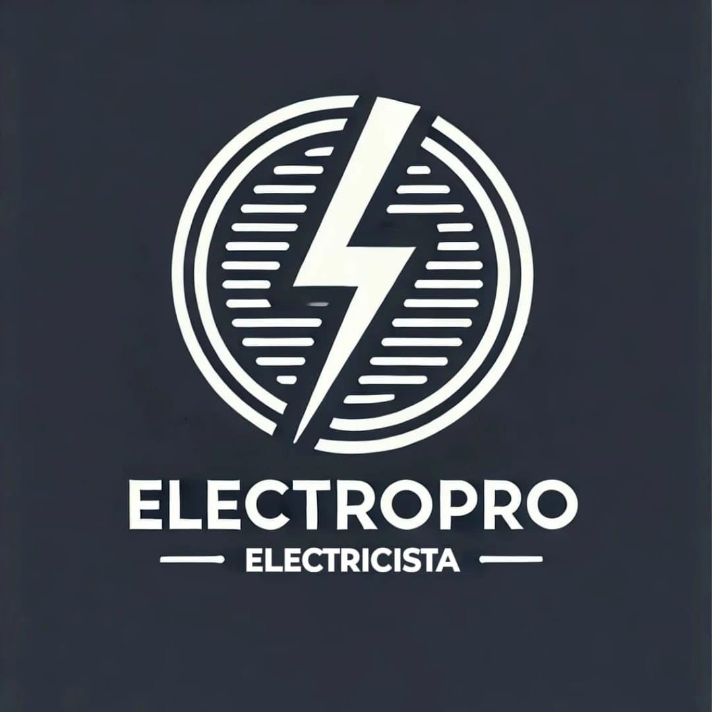

Mi nombre es Facundo, soy Electricista Instalador certificado y Tecnic. Lidero este proyecto con pasión y profesionalismo. Mi formación incluye capacitaciones avanzadas en herramientas como AutoCAD, para la confección precisa de planos eléctricos. Esta preparación académica, sumada a años de experiencia en el rubro, me permite garantizar un servicio técnico de alta calidad, adaptado a las necesidades específicas de cada cliente.
En ElectroPro nos especializamos en ofrecer soluciones completas y confiables en instalaciones eléctricas domiciliarias y comerciales, así como en sistemas de seguridad y automatismos. Confía en ElectroPro Instalaciones Eléctricas para asegurar la eficiencia, la seguridad y la tranquilidad que buscas.